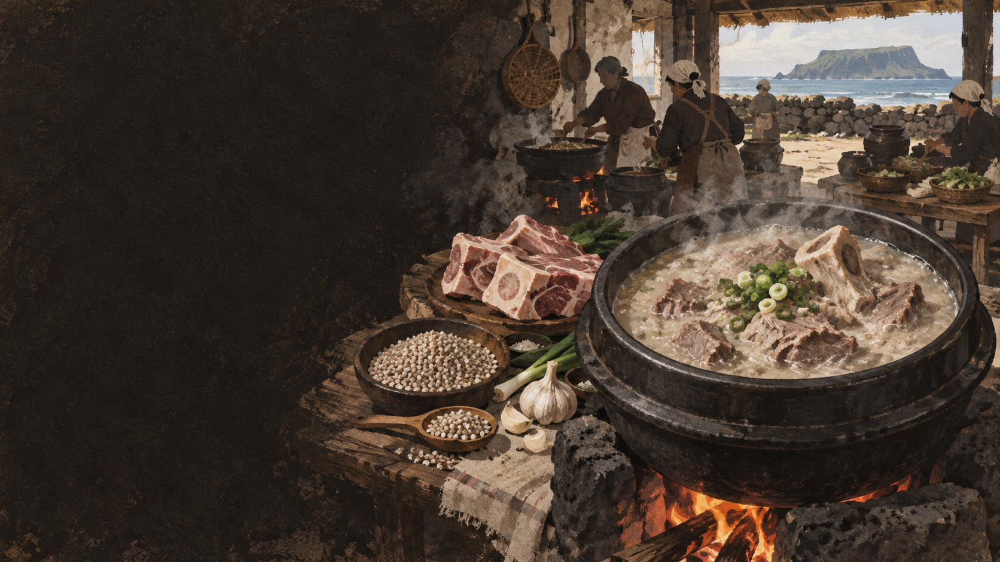

견갑골 주변
넓은 뼈와 붙은 살을 함께 끓입니다.
 제주에서는 이 재료를
제주에서는 이 재료를
제주 음식의 생활문화를 바탕으로 제작한 기록화 · 생성 이미지
접짝뼈는 돼지 앞다리 위쪽의 넓적한 어깨뼈, 곧 견갑골을 가리키는 제주식 명칭으로 설명됩니다. 뼈에 붙은 살과 결합조직을 오래 끓이면 구수한 국물이 납니다.
메밀가루는 국물에 고소함과 농도를 더합니다. 돼지 한 마리를 부위별로 나누어 잔치 음식과 일상식으로 이어 쓴 제주 부엌의 원리가 몸국과 고사리육개장에도 겹쳐 보입니다.
돼지의 부위를 나누고 뼈를 고아 메밀로 농도를 잡는 잔치 부엌의 순서입니다.
돼지를 잡아 고기·내장·뼈를 나눕니다.
접짝뼈를 깨끗이 씻어 잡맛을 줄입니다.
살이 부드러워질 때까지 국물을 냅니다.
메밀가루를 풀어 농도를 맞춥니다.
소금과 집간장 등으로 담백하게 마무리합니다.
견갑골 주변의 뼈, 오래 낸 국물, 메밀가루가 한 그릇에서 맡는 역할을 봅니다.
넓은 뼈와 붙은 살을 함께 끓입니다.
국물의 지방을 감싸며 걸쭉하고 구수한 질감을 냅니다.
구이용 살만 고르지 않고 뼈와 부산물까지 한 끼로 잇습니다.
유명한 메뉴보다 왜 이런 재료와 방식이 제주 생활에 필요했는지를 먼저 묻습니다.
돼지 국물과 메밀을 공유하면서도 건더기와 쓰임이 달라지는 세 국을 비교합니다.
돼지 국물·메밀의 농도
뼈와 붙은 살이 중심
잔치 돼지 국물 활용
모자반이 중심
돼지 국물·메밀을 쓰기도 함
삶아 찢은 고사리가 중심
오래 끓이는 기본
메밀 양·간·고명은 서로 다름
잔치에서 삶은 돼지는 돔베고기, 몸국, 수애로 갈라지고 뼈도 다시 국이 됩니다. 접짝뼈국은 검소함보다 정교한 분할과 배분의 음식입니다.
오늘의 식당에서는 1인용 뚝배기와 진한 육수가 일반적이지만, 집집마다 맑기와 메밀의 양은 달랐습니다.
먹기 좋은 살만 남기는 대신, 뼈에 붙은 맛까지 한 솥에 모았습니다.
‘접짝뼈’가 가리키는 범위는 정육 관행과 구술에 따라 조금씩 다를 수 있습니다. 실제 재료의 위치를 조리자에게 확인합니다.
지역·가정·생산자에 따라 설명과 조리법이 다를 수 있습니다. 현장 인터뷰를 인용할 때는 당사자의 사용 동의를 받습니다.